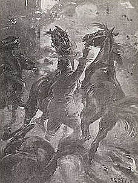
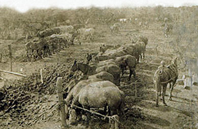

|
MAI, la ville de
La Couture est fortement
bombardée.
Les civils demeurés dans la ville, les unités
d'artillerie, comme celle de Charles, et plusieurs troupes d'infanterie
qui campent à La Couture, sont visés par ces bombardements. LA
BATAILLE DE LA CRÊTE D'AUBERS Le 9 mai, par un temps beau et venteux, la bataille de la Côte d’Aubers débute.
Après un bombardement très court mais très violent de l'artillerie afin de ménager
l’effet de surprise, les Britanniques attaquent sur les flancs, à
Fromelles, et se heurtent aux lignes allemandes puissamment défendues.
Ils se retirent au soir du 9 mai sans avoir progressé. Les pertes
britanniques sont énormes : plus de onze mille morts. L'unité
d'artillerie de Charles a tiré ce jour-là sept cent onze salves pour supporter
l'infanterie. C'est une cadence infernale, un enfer de bruit et de
fumée.
Le sous-officier note le soir dans le journal de l'unité
qu'ils ont fait un beau travail, et ce, grâce
à une bonne communication. Il note aussi que les canons
supportent bien la tension. Le lendemain c'est plutôt calme, mais les tirs reprennent les
jours suivants, Le tir ennemi est très fort et nourri, la nuit il est
intermittent. LA BATAILLE DE FESTUBERT La bataille de Festubert
a lieu du 15 au 25 mai 1915.
Elle débute par un long bombardement d’artillerie de près de
soixante heures. Après un succès initial, elle s’interrompt le 25 par
manque de munitions. Britanniques et Canadiens ont participé à
l’assaut qui a permis de progresser de cinq cents mètres environ en
profondeur sur un front de six kilomètres, au prix de seize mille morts du côté
allié, dont plus de deux mille canadiens.  L'unité d'artillerie de
Charles lance une moyenne de cinq cents salves par jour sur
différentes cibles. Leurs abris sont bombardés à plusieurs
reprises et deux hommes sont blessés.
Le 19 mai, le sous-officier note dans le journal de l'unité que les hommes
sont très épuisés suite à ces combats intensifs.
Les conducteurs ont éloigné les chevaux vers l'arrière pour
les retirer du feu.
Le 26 mai, les tirs sont légers, c'est presque tranquille sur la ligne de
front. Mais, en fin d'avant-midi, la batterie de Charles est intensivement
bombardée durant une heure avec des obus de 8 po. Le lendemain,
un autre bombardement a lieu en début d'après-midi. Il n'y a aucun dommage, mais, le soir même, la batterie déménage à
Richebourg St-Vaast. Puis, le 28 mai, elle bouge à La
Fosse où elle bivouaque.
 JUIN, le temps
est beau et chaud, les tirs sont légers. Mais, à compter du 12
juin, une autre bataille se prépare.
La section gauche de
l'unité d'artillerie de Charles et l'équipe d'observation
retournent à La Couture, le lendemain c'est la
section droite qui les suit. On laisse les lignes de chevaux à La Fosse.
... LA BATAILLE DE GIVENCHY  Givenchy
est un front de moins de trois kilomètres très fortifié par un réseau
dense de barbelés et de tranchées. Deux
nouvelles tactiques de guerre sont utilisées dans cette bataille
: les mines et la mitrailleuse Lewis Gun. Les petites attaques se succèdent
jusqu’au 15 juin 1915, date à laquelle l’offensive est
officiellement mise en place. Les 15 et 16 juin 1915, les troupes
de la 1ère Division Canadienne se joignent à deux divisions britanniques pour une attaque coordonnée. Givenchy
est un front de moins de trois kilomètres très fortifié par un réseau
dense de barbelés et de tranchées. Deux
nouvelles tactiques de guerre sont utilisées dans cette bataille
: les mines et la mitrailleuse Lewis Gun. Les petites attaques se succèdent
jusqu’au 15 juin 1915, date à laquelle l’offensive est
officiellement mise en place. Les 15 et 16 juin 1915, les troupes
de la 1ère Division Canadienne se joignent à deux divisions britanniques pour une attaque coordonnée.
Le 15 juin,
l'unité de Charles tire près de trois cents salves, toute la soirée,
sur les batteries ennemies pour supporter l'attaque de
l'infanterie. Le 16 et le 17 juin les tirs nourris continuent.
Le sous-officer qui rédige le journal de l'unité note: "On
croit que
l'attaque a été un succès. Bombarder les tranchées ennemies a
permis l'attaque. On rapporte que les barbelés et les parapets
sont complètement démolis. Les opérations des 3 derniers jours semblent un
succès. " Ce qui, en fait, n'est pas le cas. Les
pertes sont sévères avec près de deux mille hommes, dont quatre
cents canadiens. Les objectifs ne sont pas atteints... le front se
stabilise jusqu’en avril 1918. CHARLES
COMMET UNE DEUXIÈME OFFENSE Le 17 juin Charles commet une
deuxième offense "Neglect of duty" (manquement
au devoir). Aucun détail n'est mentionné au sujet de
cette offense, sinon qu'il est condamné à
cinq jours de "Field Punishment #1", soit ce que les soldats
appellent "crucifixion". Pendant ces cinq jours, le temps
est toujours radieux, et la 1st Canadian Heavy Battery ne lance que quelques
salves. Charles revient dans son unité le 23 juin. La pluie
débute pour plusieurs jours, la cadence des salves est en moyenne
de trente par jour jusqu'à la fin du mois.
 JUILLET, le 1er,
c'est le DOMINION DAY, quelques salves sont tirées sur une
batterie ennemie. Mais, en ce jour férié pour les canadiens, sous-officiers et
soldats se détendent en faisant du sport sur les lignes des chevaux. (ci-contre
le drapeau canadien de l'époque) JUILLET, le 1er,
c'est le DOMINION DAY, quelques salves sont tirées sur une
batterie ennemie. Mais, en ce jour férié pour les canadiens, sous-officiers et
soldats se détendent en faisant du sport sur les lignes des chevaux. (ci-contre
le drapeau canadien de l'époque)
Le mois débute par un temps beau et chaud, les tirs sont légers.
Le 15, par un temps plus frais, nuageux et venteux, les canons sont ajustés, l'usure est seulement d'environ 0,7
pouce. C'est très peu pour le nombre de coups tirés.
La batterie est bombardée durant la soirée. Le lendemain
de gros obus tombent sur la batterie, heureusement sans faire de
dommages. Les tirs légers se poursuivent les jours suivants sur
différentes cibles, souvent repérées par les avions.
Le 23, sous le vent et la pluie, la batterie bouge de nuit vers Sailly. Départ
en soirée, arrivée au point du jour. La
batterie a bougé en bon ordre, pas de dispersion ni de confusion.
Les canons sont aussitôt mis en
position et une ligne téléphonique
avec le quartier chef est installée ensuite. L'unité de
Charles est maintenant rattachée à la 8e Heavy British Brigade. La fin du mois est tranquille,
les tirs
légers. AOÛT, tout le mois se
poursuit aussi tranquille. Le 29 août, la
section droite bouge à Zelobes. La nuit suivante, elle commence à creuser des emplacements pour les
canons, des "guns pits", dans une nouvelle position à l'ouest de Bully. SEPTEMBRE, sous la pluie, la
section droite continue à creuser les "guns pits"
durant la nuit. Puis elle travaille à faire des abris blindés. Le
21 septembre, elle reprend
l'offensive. Le lendemain, la
section gauche se met en route pour rejoindre le
reste de la batterie à Bully. Elle arrive durant la
nuit, les canons sont aussitôt mis en position. Et les tirs
reprennent sur les batteries ennemis, les barbelés, les routes.
Les cibles sont souvent fournies par les observations des
aéroplanes, ou les S.O.S. Calls de l'infanterie. LA BATAILLE DE LOOS
La Bataille de Loos, une des principales offensives du Front Ouest en
1915, est la composante
britannique de la "deuxième
bataille de l'Artois". Les plans sont contrariés
par la pénurie d'obus, les bombardements préliminaires, pourtant essentiels dans une guerre de
tranchées, sont de faible
intensité.
 Le
25 septembre, au lever du jour, l'infanterie avance vers Loos.
L'artillerie les supporte, l'unité de Charles tire plus de trois
cent cinquante salves sur
les batteries ennemies et, la
nuit, bombarde la gare de Lens. Les Britanniques font
une percée à travers des tranchées allemandes et prennent la
ville. Le
25 septembre, au lever du jour, l'infanterie avance vers Loos.
L'artillerie les supporte, l'unité de Charles tire plus de trois
cent cinquante salves sur
les batteries ennemies et, la
nuit, bombarde la gare de Lens. Les Britanniques font
une percée à travers des tranchées allemandes et prennent la
ville.
Cependant des problèmes concernant les communications et
l'approvisionnement empêchent les unités de réserve d'arriver
à temps, et ce succès initial ne peut être exploité. Les combats continuent jusqu'au 28, mais les Britanniques sont
obligés de reculer jusqu'à leurs positions de départ. Cette
bataille fait de nombreuses victimes (plus de
quinze mille morts et trente quatre mille blessés
du côté britannique). 
L'infanterie britannique avançant au milieu des
gaz le
25 septembre 1915. Les Britanniques envoient, ce jour-là, cent
quarante tonnes de gaz
moutarde avec un succès mitigé, une partie étant rabattue vers
eux par le
vent.
OCTOBRE, la première
semaine du mois est belle, chaque jour l'artillerie tire sur des
batteries ennemies et d'autres cibles, comme la cheminée de Cité
St-Édouard qui est suspectée d'être un poste d'observation
ennemi.
La nuit, on concentre les tirs sur les routes, sachant que
les troupes se déplacent la nuit. C'est exactement ce que fait
l'unité de Charles puisque, dans la nuit du 3 octobre, l'unité bouge à une
nouvelle position au sud de Philosophe. Le 7 octobre, la
position de la batterie canadienne est bombardée, l'emplacement du canon #1
est détruit. Aucune perte
humaine. À la nuit, les canons sont déménagés au parc
Mazingarbe où, dès le lendemain, ils sont en action pour contrer l'attaque
allemande attendue par Bois Hugo. L'infanterie allemande est
dispersée, selon les observations d'un
aéroplane. Deux jours plus tard, l'unité creuse un peu plus loin de nouveaux emplacements pour les canons.
Le travail est pénible car le sol est en calcaire dur. Les salves se poursuivent à un rythme
soutenu, les tirs de barrage sont nombreux, et, la nuit, on vise
les routes. Dans la soirée du 22 octobre, sous la brume, l'unité bouge et bivouaque pour la nuit
dans une grosse ferme près de Locon. Le lendemain, elle
repart en fin d'après-midi vers sa nouvelle position à Le
Touret. L'automne s'installe de plus en plus, froid, pluie et vents forts.
La batterie reçoit des salves de Shrepnel. Donc, comme
d'habitude, se sachant repérée par l'ennemi, la batterie change
de position. L'ordre est reçu d'aller à Bailleul dans la soirée
du 29 octobre. Le lendemain,
le major va reconnaître les positons. La section
droite va au nord de Houplines, la gauche, dans
Clé d'Holland, prenant la
place de la 16ème brigade britannique. NOVEMBRE, l'automne
1915 est brumeux. Le sous-officier qui écrit chaque soir son rapport dans le journal de la 1st Canadian Heavy Battery varie
son vocabulaire pour décrire le temps: " dull, foggy,
hazy, misty, cloudy,..." sans compter les jours de
pluie et de vents. Toute cette brume ralentit la cadence des tirs
car l'observation des cibles est difficile. On en profite pour
inspecter les canons, certains sont retirés, d'autres
échangés avec d'autres unités, ainsi qu'un interprète
allemand qui rejoint le Quartier Général. Le 11 novembre, le temps se dégageant quelques heures, plusieurs avions hostiles survolent
les positions britanniques. Les tirs continuent quand la brume le permet. Le
21 novembre,
premier gel, le frimas n'empêche pas de nombreuses salves
sur des tranchées en construction et du transport en mouvement sur la route.
Le canon #1 brise durant une série de salves.
Le 27 novembre, par temps froid, la ville d'Armentières est lourdement
bombardée. En représailles, la batterie de Charles lance un tir
nourri les jours suivants. 
Les femmes de la région des Flandres brodent des cartes de Noël, comme
celle-ci, et les vendent, pour quelques sous, aux soldats qui les
envoient à leur famille.
DÉCEMBRE, se
poursuit à l'identique quant à la température. L'unité tire une centaine de salves par
jours, sauf ceux où l'observation est trop
difficile.
Ainsi, il pleut tant que, le 6 décembre, les canons de
la section droite se retrouvent en partie dans l'eau, ils bougent le lendemain sur un terrain plus élevé.
Et les tirs continuent...  Le jour de Noël,
sous les nuages, l'unité tire une cinquantaine de salves sur le château
et les alentours, sachant bien que c'est le quartier général
des officiers allemands. (On peut penser que le choix de
cette cible en ce jour précis est une façon, pour la batterie
canadienne, de se défouler un peu...) Le jour de Noël,
sous les nuages, l'unité tire une cinquantaine de salves sur le château
et les alentours, sachant bien que c'est le quartier général
des officiers allemands. (On peut penser que le choix de
cette cible en ce jour précis est une façon, pour la batterie
canadienne, de se défouler un peu...)
Le 31 décembre est brumeux, et la nuit qui suit, celle du Nouvel
An, commence sous la pluie. Cela n'empêche pas la batterie de
Charles de tirer sur des batteries allemandes qui
bombardent la Chapelle D'Armentières.
Les Fêtes de 1915
sont lugubres pour la 1st Canadian Heavy Battery.
|
 Ordre de service
concernant la prévention d'engelures aux pieds chez les
soldats, 11 octobre 1915
Ordre de service
concernant la prévention d'engelures aux pieds chez les
soldats, 11 octobre 1915
Bibliothèque et Archives Canada
Outre l'ennemi, il y a d'autres maux à combattre dont les
rhumes, les grippes, et les puces. Mais, dans le froid et
l’humidité, un problème grave appelée " pied
de tranchées" se répand. C'est un type
d’engelures qui empêche la circulation sanguine vers
les pieds, empêtrés dans des lourdes bottes pendant des
heures passées dans la boue et les eaux glacées. La peau
pourrit, provoquant, dans les cas extrêmes, la gangrène
et nécessitant l’amputation du membre. La seule
solution est de ne pas trop serrer les lacets de ses
bottes, de faire sécher ses pieds relativement régulièrement
et de les frotter avec une graisse ou, si possible, à l'huile
de baleine, reconnue pour garder les membres au chaud plus
longtemps, puis de mettre des
chaussettes sèches.
|

|